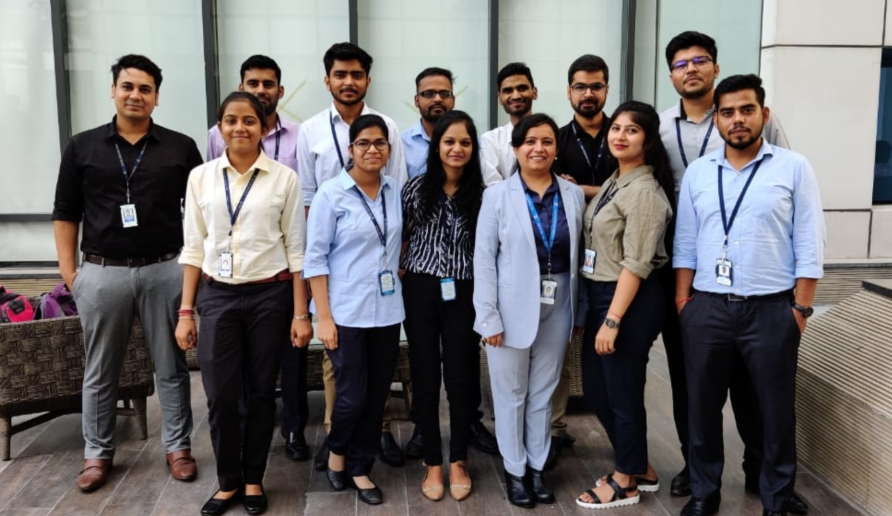
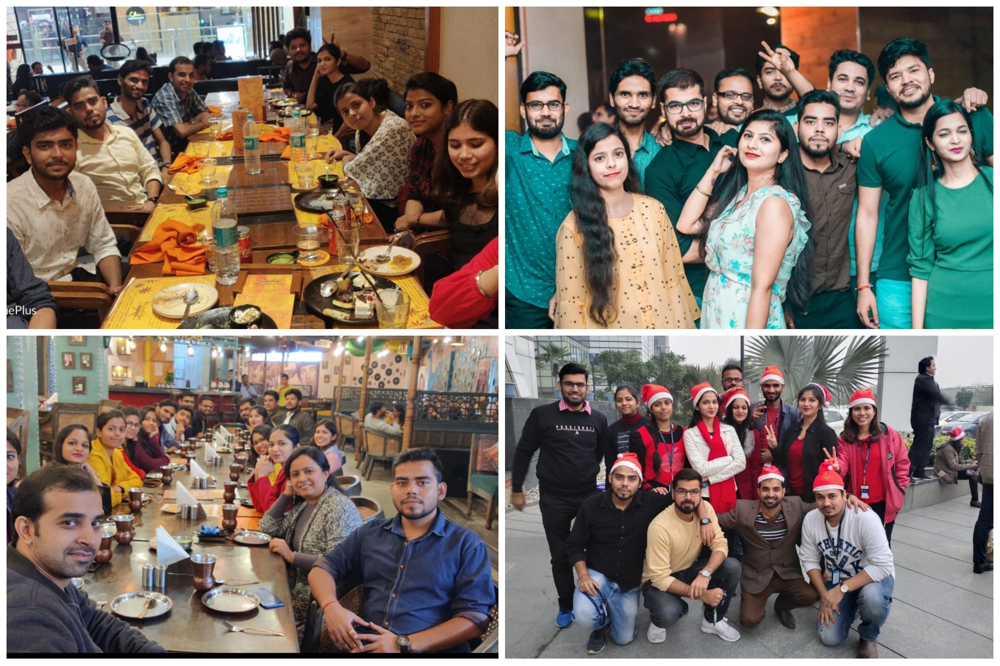
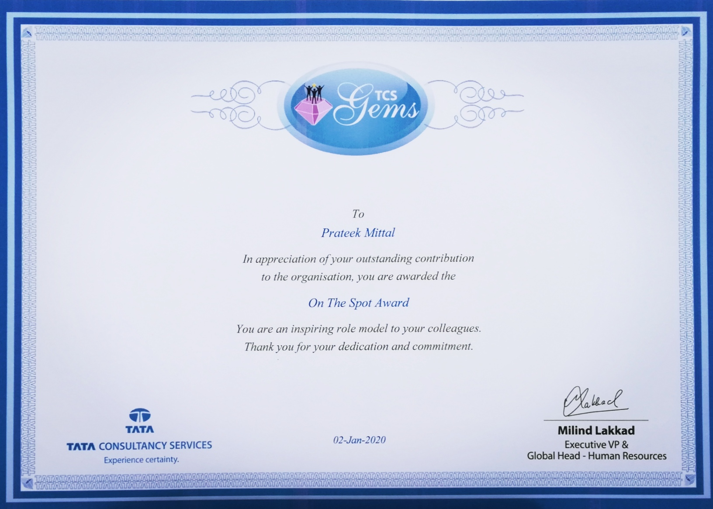
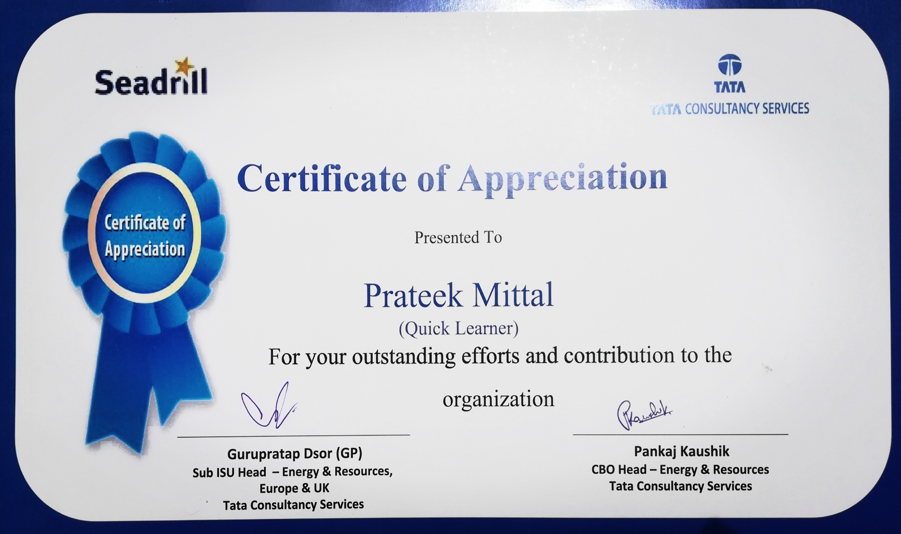
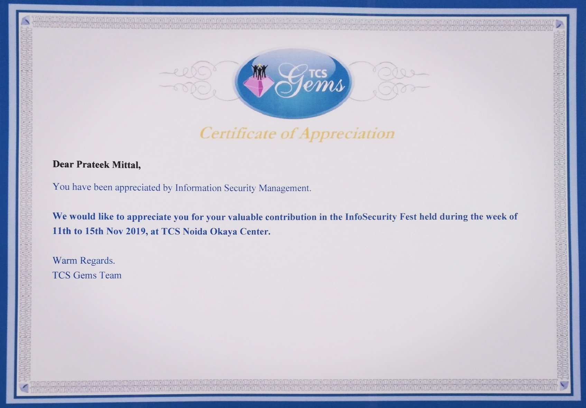

27th June 2019. My first day at my first job, I entered the TCS Noida VI office premises with a little nervous energy and great amount of excitement of starting this new phase of life. We attended the induction program followed by document verification and other formalities. Induction was done for 2 more days. The next week was allocated for a brief introductory training and a Project Readiness Assessment (PRA) was taken at the end. After clearing the PRA, projects were allocated. I was tagged to the project called Seadrill in the Energy and Resources domain. I was satisfied with the project and joined it without any delay.
The Seadrill Operational Applications Team
The Work
Seadrill is an UK based offshore drilling organization. Its basic operation is to perform drilling operations in the sea for petroleum companies. TCS handled the ISIT operations (Information systems and Information Technology Operations) of Seadrill. There were several TCS teams managing the servers, databases, networks etc. I was in the Operational Applications Team as an Application Engineer. There were numerous applications which the business was using for various purposes like rig fleet management, Finance reporting, QHSE applications and a Total Management System. I was assigned 2 applications, one was a rig fleet management and reporting interface called RIMDrill and the other was a finance reporting system called MasterSAF. My responsibilities included- 1- Performing tests on the upgrades and patches of these applications to check whether they meet the business requirement and are bug free. 2- Deploying the upgrades on the production environment. 3- Resolving user issues by identifying their root cause and User Access Management. 4- Health check and monitoring of the applications and their services.
The Work Environment
The operational applications team was a young and vibrant team comprising of proactive members. I could truly feel the enthusiasm with which the work was done. Credits also go to the Agile methodology which was practiced by the team. The day started with the Huddle Call led by a scrum master around a Digital KanBan board which was set up in our ODC. A weekly retrospective meeting was conducted every Friday where the strong and weak points of the week were discussed in an open environment. Process Improvements, technical and managerial were suggested during this meeting and were implemented according to priority. All-in-all a relaxed and friendly work environment was provided which is something I really appreciate. There were parties and celebrations every now and then. Although, this should not be mistaken for a no-work al- play environment. There were days when I had to pull all-nighter to resolve a production bug, and that came out of the sense of responsibility which I developed for the applications I handled.
Parties! A lot of parties
Appreciations and Awards
My contributions during my journey of 1 year and 2 months in TCS was duly recognized and appreciated. Here are some awards and appreciations I received-
1- TCS On The Spot Award
TCS on the spot award, received for successfully managing and implementing a crutial application upgrade
2- Seadrill Certificate of Appreciation
Seadrill Certificate of Appreciation, received for excellent contributions to the organisation
3- Appreciation for helping Organize TCS Info-Security Fest
Appreciation received for being in the organising committee of TCS Info-Security Fest 2019